01Chuẩn bị trước khi dùng
Sử Studio chạy trên macOS 13 trở lên, cả Mac chip Apple lẫn Intel. Mỗi máy tự đăng nhập và tự nhập key của mình; dự án lưu trên máy, key lưu trong Keychain của macOS.
- ChatGPT / Codex: dùng cho các bước có AI (ý tưởng, hướng kể, storyboard, gợi ý tag, tìm tư liệu trên web).
- ElevenLabs API key: tạo giọng đọc và hội thoại.
- PlenX API key: tạo ảnh tham chiếu và clip video.
- FFmpeg (không bắt buộc): chỉ cần khi đưa video WebM/OGV vào dự án. Ảnh tư liệu và video MP4/MOV không cần.
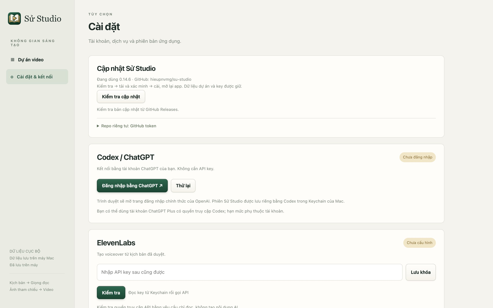
Cài đặt & kết nối: nơi đăng nhập, nhập key và cập nhật app.
- 1Kiểm tra cập nhật: tải bản mới từ GitHub, kiểm tra chữ ký rồi cài. Dự án và key được giữ nguyên.
- 2Đăng nhập bằng ChatGPT: mở trang đăng nhập chính thức của OpenAI để kết nối Codex.
- 3Dán API key ElevenLabs rồi bấm Lưu khóa. Làm tương tự với PlenX ở phần bên dưới.
- 4Kiểm tra: gọi thử dịch vụ bằng key đã lưu, không tốn credit tạo nội dung.
02Thư viện dự án
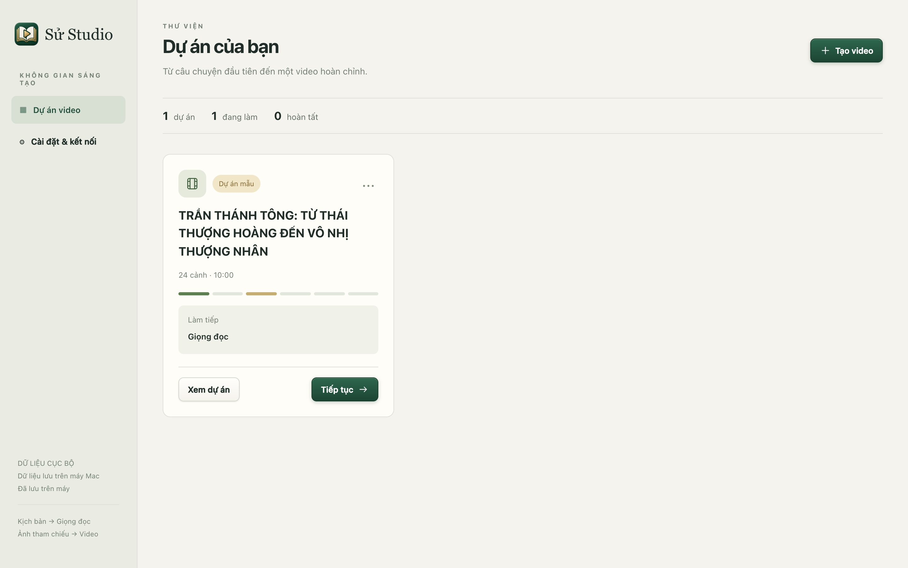
Màn hình đầu tiên: mọi dự án video của bạn.
- 1Tạo video: bắt đầu dự án mới.
- 2Tiếp tục: mở thẳng bước đang làm dở. Ô “Làm tiếp” cho biết đó là bước nào.
- 3Xem dự án: mở trang tổng quan của dự án.
- 4Menu ⋯: mở quy trình, mở giọng đọc, xem tài nguyên hoặc chuyển dự án vào thùng rác.
03Tạo video mới
Có ba cách bắt đầu. Cách nào cũng dẫn tới cùng một storyboard để bạn đọc, sửa và duyệt.
AI gợi ý chủ đề, hướng kể, dàn ý rồi viết storyboard. Bạn duyệt từng bước.
Dán lời thuyết minh đã viết (tối đa 20.000 ký tự). AI giữ nguyên lời, chỉ chia cảnh và viết prompt ảnh/video.
Chọn file .xlsx. App đọc theo tiêu đề cột, không gọi AI và không tạo media chỉ vì nhập file.
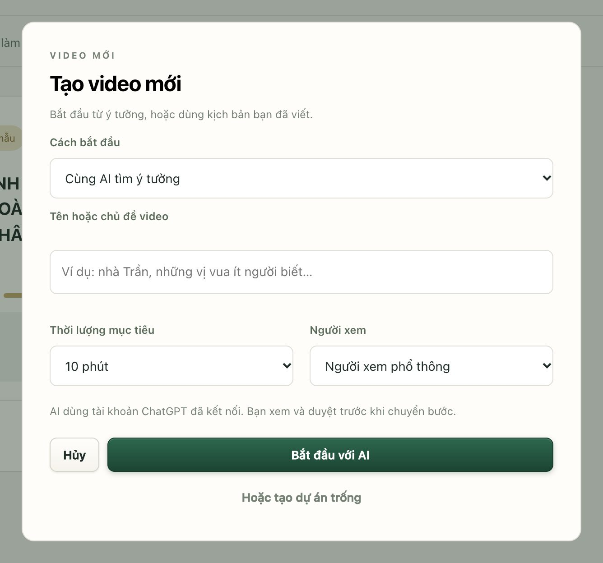
Hộp “Tạo video mới”.
- 1Cách bắt đầu: chọn một trong ba cách ở trên.
- 2Tên hoặc chủ đề: ví dụ “nhà Trần, những vị vua ít người biết”.
- 3Thời lượng mục tiêu và người xem: AI dùng để chia số cảnh và giọng kể.
- 4Bắt đầu với AI. Muốn tự làm từ đầu thì bấm “Hoặc tạo dự án trống” bên dưới.
04Tổng quan và quy trình
Mỗi dự án đi qua sáu bước. Sau khi duyệt storyboard, phần âm thanh và phần hình ảnh làm song song được; chỉ bước dựng cuối cần cả hai.
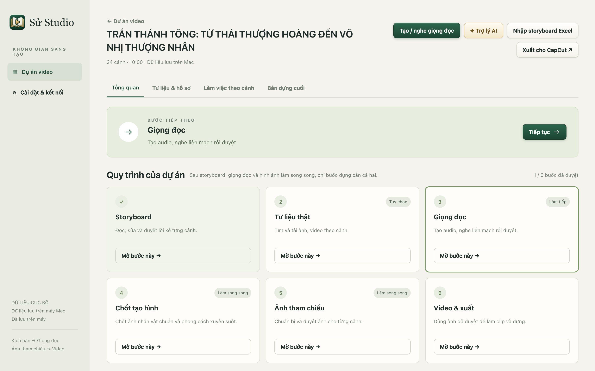
Trang tổng quan của dự án mẫu “Trần Thánh Tông”.
- 1Bước tiếp theo: app gợi ý bước nên làm. Tư liệu thật là tuỳ chọn nên không bao giờ được gợi ý.
- 2Nhãn Làm song song: bước này mở được ngay dù giọng đọc chưa xong.
- 3Tạo / nghe giọng đọc: lối tắt tới bước Giọng đọc.
- 4Trợ lý AI: mở các bước có AI (ý tưởng, hướng kể, dàn ý, storyboard).
- 5Xuất cho CapCut: xuất gói tài nguyên để dựng tiếp ở phần mềm khác.
05Sửa storyboard theo từng cảnh
Tab Làm việc theo cảnh cho bạn sửa lời thuyết minh, prompt ảnh, prompt video, thời gian và ghi chú của từng cảnh.
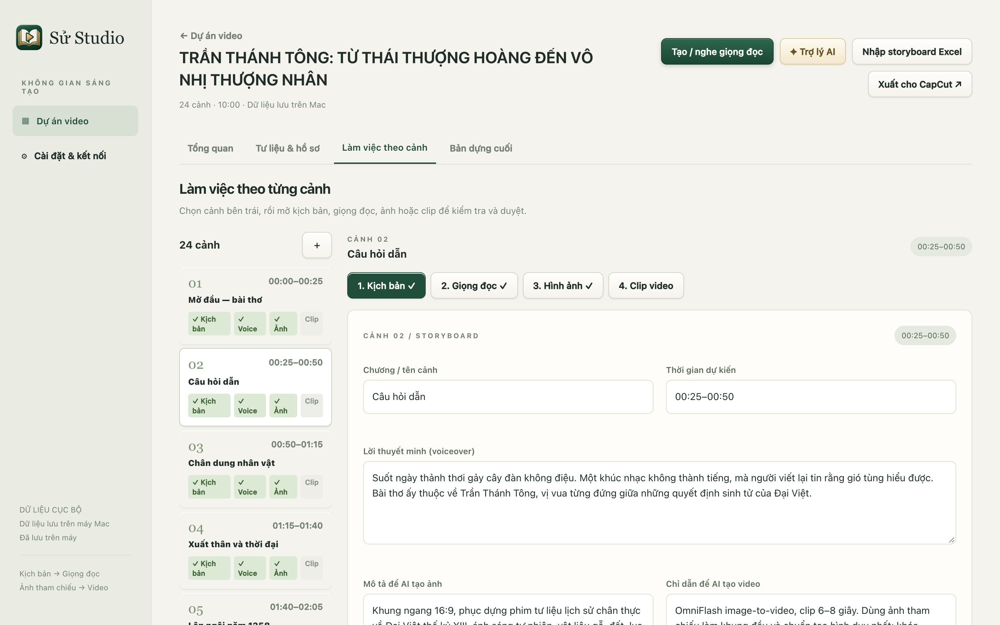
Tab “Làm việc theo cảnh”.
- 1＋: thêm cảnh mới vào cuối danh sách.
- 2Bốn phần của mỗi cảnh: Kịch bản → Giọng đọc → Hình ảnh → Clip video. Dấu ✓ là phần đã duyệt.
- 3Sửa lời thuyết minh trực tiếp. App tự lưu.
Sửa sau khi đã duyệt: phần nào cần làm lại?
App chỉ bỏ duyệt đúng phần bị ảnh hưởng, và báo ngay cần làm lại gì.
| Bạn sửa | Cần duyệt lại |
|---|---|
| Ghi chú, tên chương, thời gian | Không cần |
| Lời thuyết minh | Tạo lại và duyệt lại giọng đọc của cảnh |
| Prompt ảnh | Duyệt lại ảnh và clip |
| Prompt video | Duyệt lại clip |
| Xoá trống lời, prompt ảnh hoặc thời gian | Duyệt lại storyboard của cảnh; audio, ảnh, clip giữ nguyên |
06Tìm tư liệu thật
Bước tuỳ chọn để tìm ảnh và phim tư liệu thật cho từng cảnh: Wikimedia Commons, bảo tàng The Met, kho phim Prelinger, và (nếu bật) tìm thêm trên web bằng ChatGPT ở báo chí, bảo tàng, kho lưu trữ trong và ngoài nước.
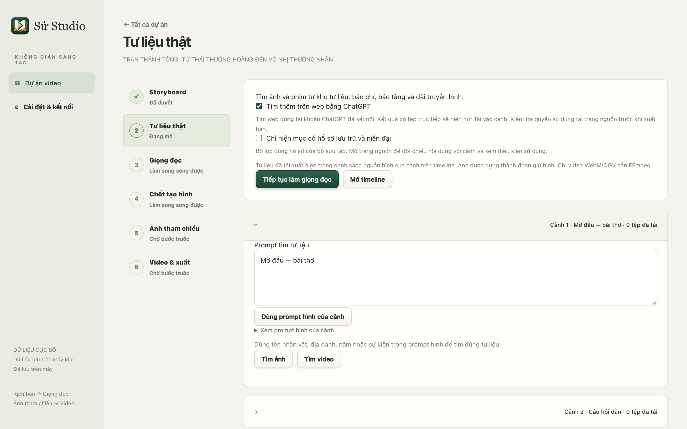
Đầu trang Tư liệu thật.
- 1Tìm thêm trên web bằng ChatGPT: mở rộng sang báo chí, đài truyền hình, bảo tàng. Kết quả web cần đối chiếu.
- 2Chỉ hiện mục có hồ sơ lưu trữ và niên đại: lọc bớt ảnh cộng đồng chưa rõ xuất xứ.
- 3Xong thì đi tiếp. Bạn có thể quay lại bước này bất cứ lúc nào.
- 4Bước này mang nhãn Tuỳ chọn: không làm cũng không chặn các bước sau.
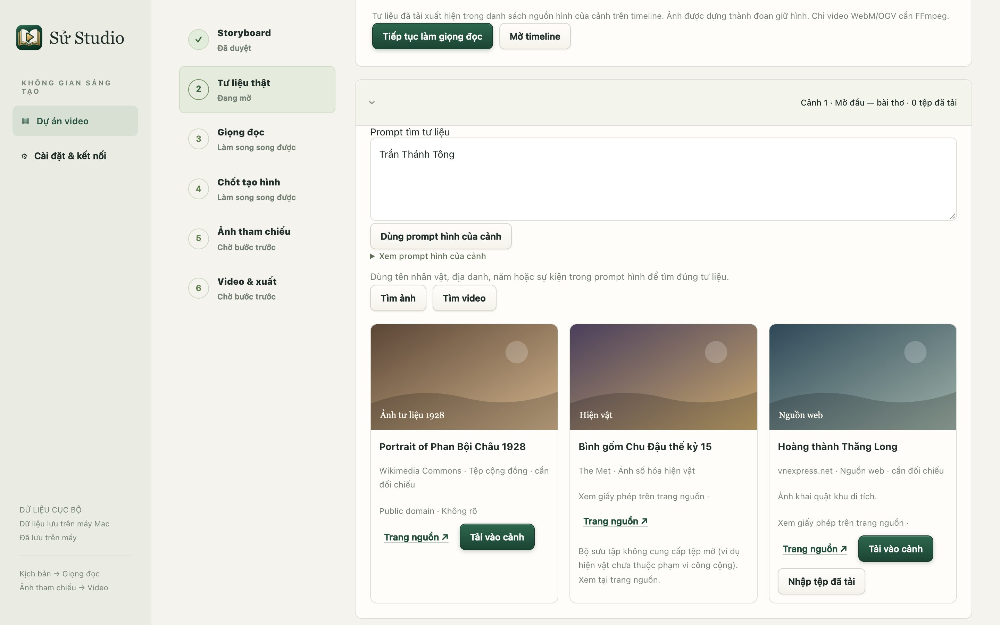
Kết quả tìm kiếm của một cảnh.
- 1Từ khoá tìm: dùng tên nhân vật, địa danh, năm hoặc sự kiện. Cụm ngắn tìm tốt hơn câu dài.
- 2Tìm ảnh hoặc Tìm video.
- 3Tải vào cảnh: tải tệp về dự án. Ảnh được dựng thành đoạn giữ hình, không cần FFmpeg.
- 4Trang nguồn ↗: mở trang gốc để đối chiếu nội dung và giấy phép trước khi xuất bản.
07Giọng đọc
Tạo lời thuyết minh bằng ElevenLabs, nghe liền mạch rồi duyệt. Bước này chạy song song với phần hình ảnh.
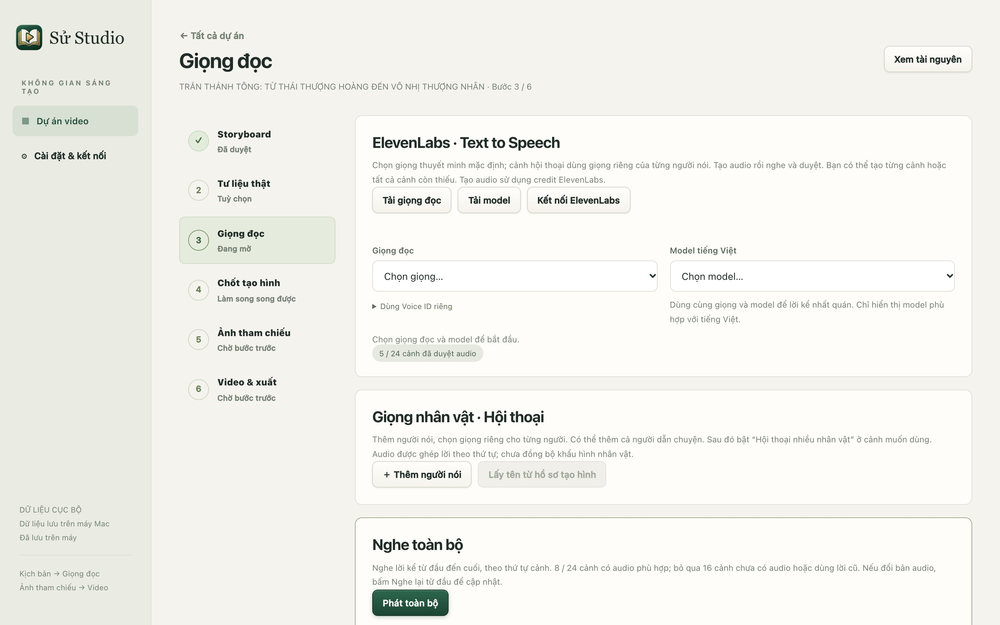
Thiết lập giọng chung cho cả dự án.
- 1Tải giọng đọc: lấy danh sách giọng từ tài khoản ElevenLabs.
- 2Chọn giọng thuyết minh mặc định.
- 3Chọn model tiếng Việt. Cảm xúc và audio tags cần Eleven v3 hoặc v4.
- 4Phát toàn bộ: nghe lời kể từ đầu đến cuối theo thứ tự cảnh.
- 5Trong lúc chờ audio, bạn có thể mở Chốt tạo hình và Ảnh tham chiếu.
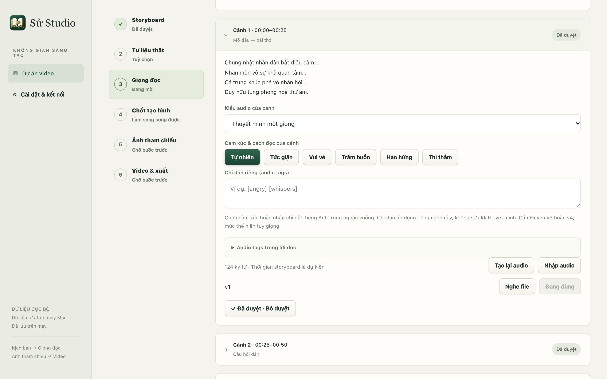
Một cảnh trong danh sách giọng đọc.
- 1Kiểu audio: thuyết minh một giọng, hoặc hội thoại nhiều nhân vật (tối đa 10 giọng, 2.000 ký tự mỗi cảnh).
- 2Cảm xúc cho cả cảnh: tự nhiên, trầm buồn, thì thầm…
- 3Tạo lại audio sau khi đổi lời hoặc cảm xúc. Hoặc Nhập audio có sẵn.
- 4Nghe file để kiểm tra.
- 5Duyệt cảnh này. Cuối trang có nút duyệt hàng loạt các cảnh đã nghe.
08Chốt tạo hình
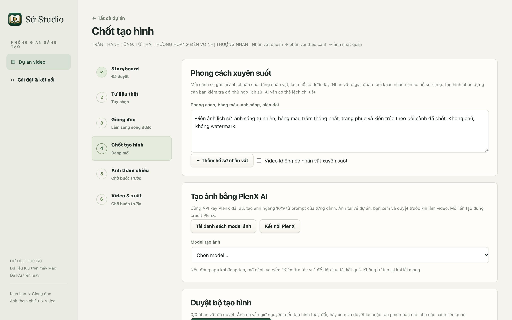
Giữ nhân vật và phong cách nhất quán qua mọi cảnh.
- 1Phong cách xuyên suốt: bảng màu, ánh sáng, niên đại. Được gửi kèm mọi lần tạo ảnh.
- 2Thêm hồ sơ nhân vật và ảnh chuẩn (tạo bằng PlenX, nhập file hoặc lấy ảnh cảnh đã có). Nhân vật khác tuổi nên có hồ sơ riêng.
- 3Tải danh sách model ảnh của PlenX.
- 4Duyệt bộ tạo hình, rồi xác nhận nhân vật nào xuất hiện ở từng cảnh.
09Ảnh tham chiếu
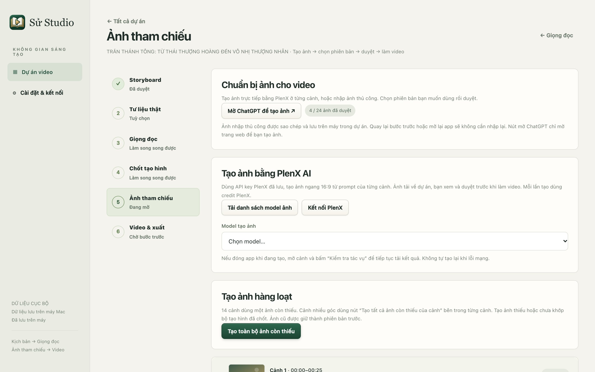
Chuẩn bị ảnh cho từng cảnh trước khi làm clip.
- 1Mở ChatGPT để tạo ảnh nếu muốn tạo ảnh ở ngoài rồi nhập vào.
- 2Tải danh sách model ảnh PlenX.
- 3Chọn model dùng cho cả dự án.
- 4Tạo toàn bộ ảnh còn thiếu: chạy lần lượt, bỏ qua cảnh đã có ảnh, dừng khi gặp lỗi.
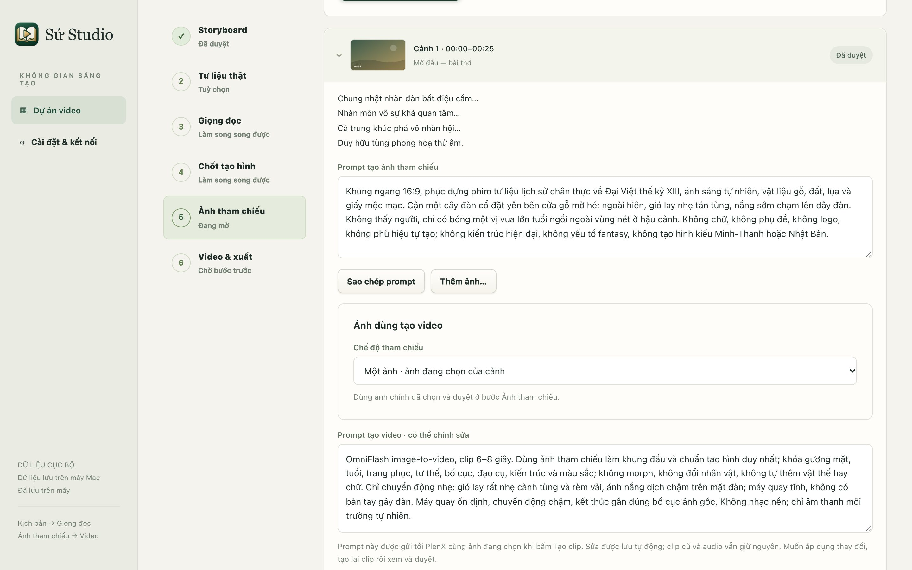
Một cảnh trong bước Ảnh tham chiếu.
- 1Prompt ảnh của cảnh, sửa được trực tiếp.
- 2Sao chép prompt để dùng ở công cụ khác.
- 3Thêm ảnh…: nhập ảnh từ máy làm một phiên bản mới.
- 4Ảnh dùng tạo video: một ảnh, hoặc nhiều ảnh có thứ tự (R2V) cho cảnh nhiều góc máy.
- 5Prompt video gửi kèm ảnh khi tạo clip.
10Tạo clip video
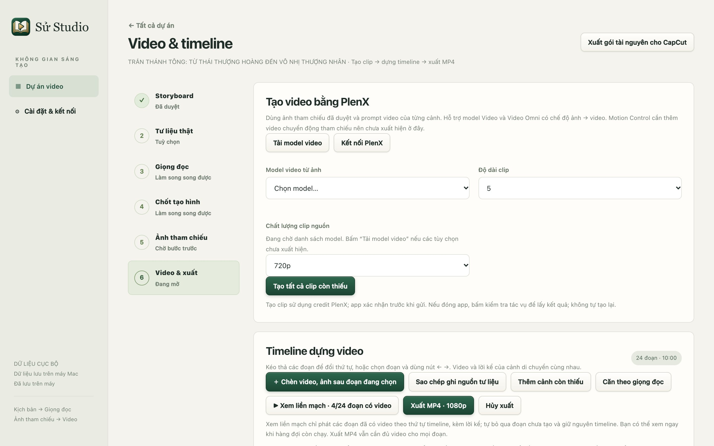
Bước Video & xuất: tạo clip bằng PlenX và dựng timeline.
- 1Model video từ ảnh (image-to-video).
- 2Độ dài clip và chất lượng nguồn.
- 3Tạo tất cả clip còn thiếu từ ảnh đã duyệt. App hỏi xác nhận vì tốn credit.
- 4Chèn video, ảnh sau đoạn đang chọn (xem mục Chèn video, ảnh).
- 5Căn theo giọng đọc: đặt thời lượng từng đoạn bằng độ dài lời kể thật.
- 6Xem liền mạch các đoạn đã có video, kèm lời kể.
- 7Xuất MP4 1080p, 16:9, 30 fps khi mọi đoạn đã có video.
11Dựng timeline
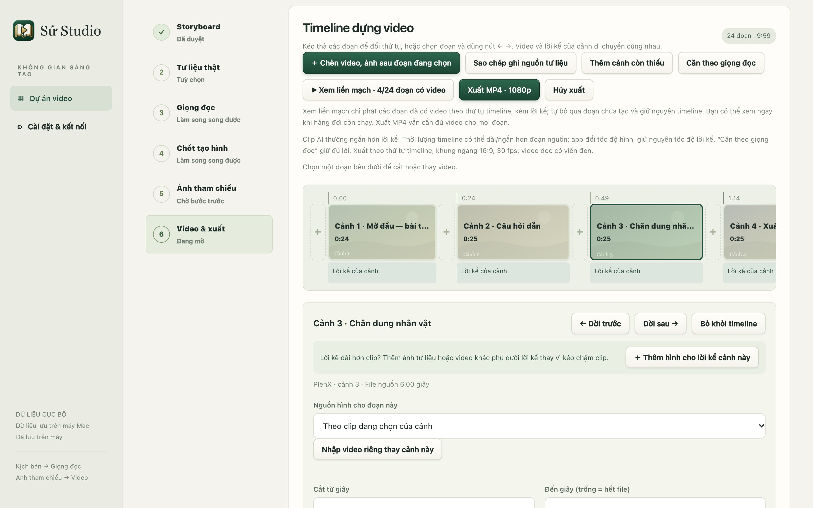
Timeline với đoạn thứ ba đang chọn.
- 1Đoạn đang chọn. Kéo thả để đổi thứ tự; video và lời kể của cảnh đi cùng nhau.
- 2Ô ＋ giữa các đoạn: chèn thêm video hoặc ảnh đúng chỗ đó.
- 3Dời trước / Dời sau từng bước một.
- 4Bỏ khỏi timeline. File gốc vẫn ở trong dự án.
- 5Cắt từ giây / đến giây để lấy một phần clip.
- 6Thời lượng trên timeline. Hình đổi tốc độ cho vừa; lời kể giữ nguyên tốc độ.
12Chèn video, ảnh vào timeline
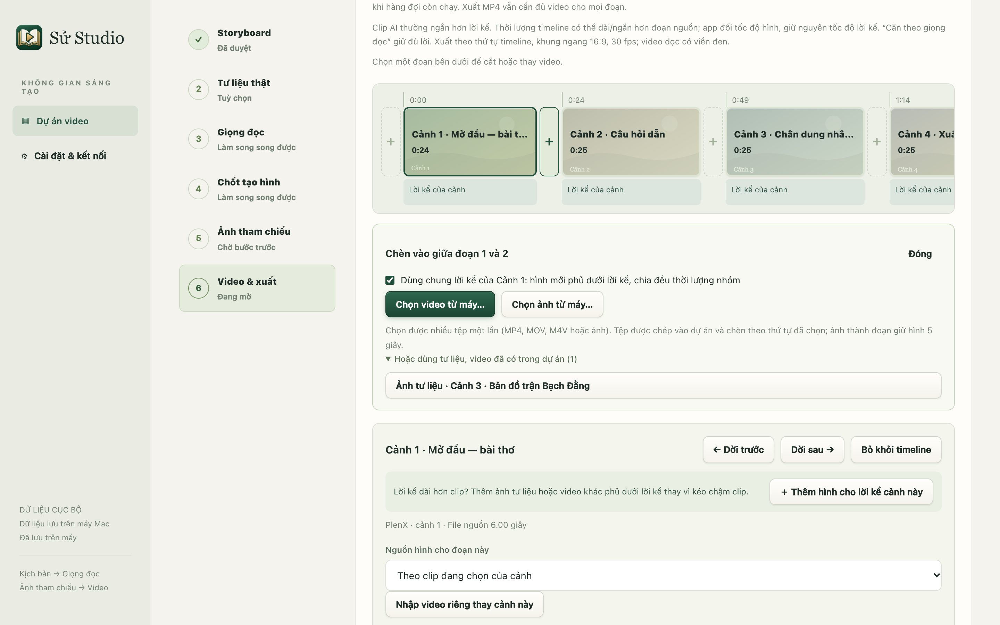
Bấm ô ＋ giữa đoạn 1 và 2.
- 1Ô ＋ vừa bấm sáng lên. Có ô ở đầu, giữa mọi đoạn và ở cuối timeline.
- 2Dùng chung lời kể của Cảnh 1: hiện khi ô ＋ đứng ngay sau một cảnh. Giữ dấu chọn để hình mới phủ dưới lời kể của cảnh đó.
- 3Chọn video từ máy…: chọn được nhiều MP4, MOV, M4V một lần (giữ ⌘ khi chọn).
- 4Chọn ảnh từ máy…: mỗi ảnh thành một đoạn giữ hình 5 giây.
- 5Tư liệu, video đã có trong dự án: chèn lại ảnh/phim tư liệu đã tải hoặc video từng nhập.
Tệp được chép vào dự án và chèn theo đúng thứ tự bạn chọn. Tệp hỏng được báo tên và bỏ qua, các tệp còn lại vẫn được chèn.
13Một cảnh dùng nhiều hình
Cách dựng quen thuộc của phim tư liệu: một đoạn lời kể dài được phủ bằng nhiều hình nối nhau, ví dụ clip AI 8 giây, rồi phim tư liệu 8 giây, rồi ảnh bản đồ 8 giây. Lời kể chạy liền, không hình nào bị kéo chậm.
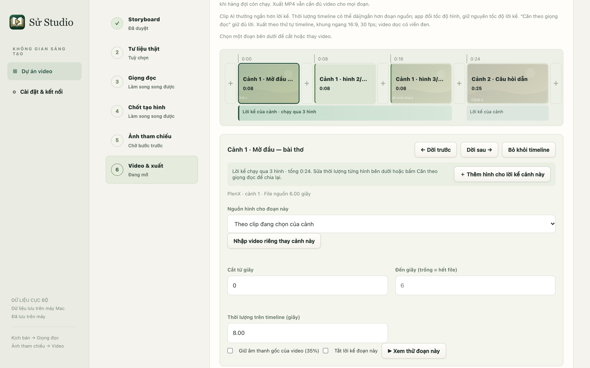
Cảnh 1 có lời kể 24 giây, phủ bằng 3 hình.
- 1Hình phủ có viền xanh bên trái và tên dạng “Cảnh 1 · hình 2/3”.
- 2Một thanh lời kể liền chạy dưới cả nhóm.
- 3Tóm tắt nhóm: số hình và tổng thời lượng.
- 4Thêm hình cho lời kể cảnh này: mở bảng chèn ngay cuối nhóm.
- 5Sửa thời lượng từng hình. Tổng của nhóm cần đủ dài cho lời kể.
- Chọn cảnh có lời kể dài hơn clip, bấm ＋ Thêm hình cho lời kể cảnh này (hoặc ô ＋ ngay sau cảnh).
- Giữ dấu chọn Dùng chung lời kể của Cảnh N, rồi chọn video, ảnh hoặc tư liệu.
- Thời lượng cũ của cảnh được chia đều cho các hình. Bấm Căn theo giọng đọc để chia lại theo đúng độ dài lời kể.
- Bấm Xem thử đoạn này trên bất kỳ hình nào trong nhóm để nghe cả nhóm cùng lời kể.
14Xuất phim và cập nhật
- Xuất MP4 · 1080p: chọn nơi lưu; phim 16:9, 30 fps. Video dọc có viền đen hai bên.
- Sao chép ghi nguồn tư liệu: copy tên, tác giả, giấy phép và đường dẫn của mọi tư liệu đang dùng để dán vào phần mô tả video.
- Xuất gói tài nguyên cho CapCut: lấy toàn bộ audio, ảnh, clip để dựng thêm hiệu ứng, chữ và nhạc nền.
- Cập nhật: Cài đặt & kết nối → Cập nhật Sử Studio → Kiểm tra → Tải → Cài và khởi động lại. Đợi xuất phim hoặc hàng đợi tạo xong trước khi cài.
Câu hỏi thường gặp
- Vì sao không bấm được “Xuất MP4”?
- Còn đoạn chưa có video, hoặc một đoạn/nhóm ngắn hơn lời kể. Bấm “Căn theo giọng đọc” hoặc thêm hình phủ.
- Sửa một chữ trong lời đọc có mất ảnh đã duyệt không?
- Không. Chỉ giọng đọc của cảnh đó cần tạo lại và duyệt lại.
- Tôi đóng app khi đang tạo ảnh hoặc clip?
- Mở lại cảnh và bấm “Kiểm tra tác vụ” để lấy kết quả đã gửi. App không tự gửi lại để tránh tốn thêm credit.
- Tìm tư liệu ra ít hoặc sai người?
- Dùng từ khoá ngắn: tên riêng, địa danh, năm. Thử cả cách viết không dấu và tên tiếng Anh của sự kiện.